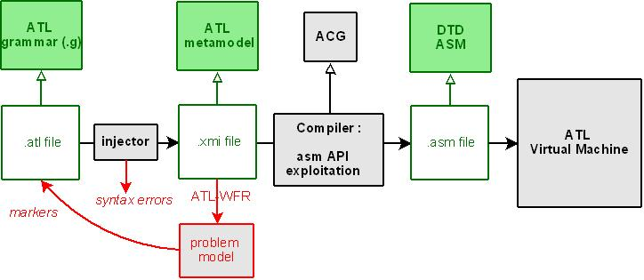
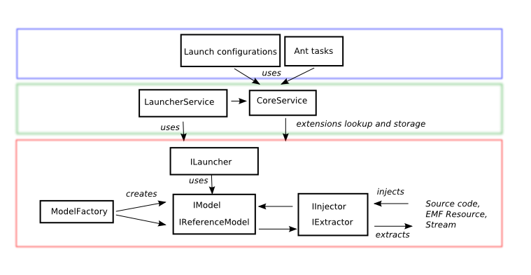
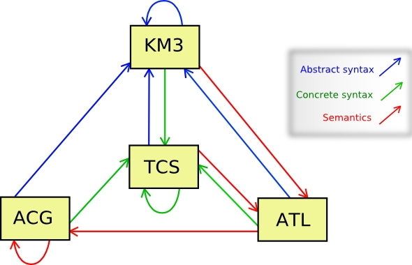

| ATL Architecture | ||
|---|---|---|
|
|
|
|
| ATL Source Code | Updating This Document | |
The ATL architecture consists on:
The following schema describes ATL components and their role during the execution of a transformation.

ATL VM is intercalated between the ATL compiler and the used frameworks (EMF, MDR), allowing modularity. Consequently, changes on ATL Language only involve ATL compiler.
This schema describes the ATL Core and how it interacts with tools like LaunchConfigurations, Ant tasks.

To simplify the use of ATL Core and reduce code duplication, two services are provided: CoreService and LauncherService.
This utility class provide a way to lookup into eclipse extensions, or an internal storage, for Core implementations. Those implementations can be registered into the CoreService for a standalone use. For instance, here we register the extensions needed to launch a transformation using EMF-specific VM, in standalone:
CoreService.registerLauncher(new EMFVMLauncher());
CoreService.registerFactory("EMF", EMFModelFactory.class);
CoreService.registerExtractor("EMF", new EMFExtractor());
CoreService.registerInjector("EMF", new EMFInjector());
The launcher service allow to launch a transformation from a set of parameters like maps of path and maps of model names: this is strongly related to launch configurations and ant tasks as it allows to launch the transformation on any virtual machine.
The main implementation of the ATL Core is the EMF one, which is used by ATL itself for parsing and compilation. It is defined under the org.eclipse.m2m.atl.core.emf plugin.
Here is an explanation about the use ATL EMF-specific injector/extractor. For both, we use the EMF notation to select Resources:
| Resource Type | ATL EMF API Syntax | Example |
|---|---|---|
| File system Resource | file:/<path> | file:/D:/eclipse/workspace/mmproject/sample_metamodel.ecore |
| EMF uri | <uri> | http://www.eclipse.org/uml2/2.1.0/UML |
| pathmap | pathmap:<path> | pathmap://PROFILE/sample_profile.uml#_0 |
| Workspace Resource | platform:/resource/<path> | platform:/resource/mmproject/sample_metamodel.ecore |
| Plug-in Resource | platform:/plugin/<path> | platform:/plugin/mmproject/sample_metamodel.ecore |
Here is an example of usage:
ModelFactory factory = CoreService.createModelFactory("EMF");
IReferenceModel umlMetamodel = factory.newReferenceModel();
injector.inject(umlMetamodel, "http://www.eclipse.org/uml2/2.1.0/UML");
According to the previous table, you can use another notation to load the model:
injector.inject(sampleMetamodel, "file:/D:/eclipse/workspace/mmproject/sample_metamodel.ecore");
The ATL VM is a byte code interpreter which manages OCL and ATL types hierarchy. A complete ATL VM specification is available : ATL_VMSpecification. This specification consists on a precise description of the ATL VM functionalities, but doesn't describe the implementation. The intent is to allow any developer to create an ATL VM in any language. The Native Library (org.eclipse.m2m.atl.engine.vm.nativelib package) gathers all basic type definitions used by the ATL VM : OCL types and ATL specific types. Both are defined at the same level, and use reflexion. OCL appears at several levels in the ATL architecture :
The following schema shows the ATL VM working:

During ATL VM initialization, every operations are registered into a Map. The ExecEnv Class contains the virtual execution environment. It deals with the operation map which registers all operations used by the transformation. It contains every information used by a given execution, like models, and is recreated for each execution. Operations are executed sequentially, into frames, according to their type. For instance, in ATL, a call of the append() method is directly mapped to a call to the corresponding method in the ASMSequence class.
The Frame stores and throws all error messages. The ASMStackFrame is dedicated to ASM methods, when the StackFrame is dedicated to native methods. Execution errors come from ATL VM when the method Frame.printstacktrace is called.
At this time there are two implementations of the ATL VM.
The Regular VM is the first version of the ATL Virtual Machine. The implementation is abstracted from the used model management framework, using model handlers. Model Handlers consists on an abstraction layer dedicated to model access. This access is implemented by two classes : ASMModel et ASMModelElement.
ATL contains three plugins drivers corresponding to different Model Handlers : EMF, MDR, UML2. Each plugin implements those abstract classes :
Input and output models are loaded using the same API and are differenciated with an "isTarget" property. That API implements the "getMetaElementsByName" method which correspond to the "findme" ASM instruction.
This VM implementation is still used in ATL, because it is strongly linked to several parts (now only the ATL Debugger). But the Regular VM has a lot of performance issues, especially because of the model handler architecture.
The EMF-specific VM is a redefinition of the Regular one, which resolves a lot of performance issues by avoiding EObjects wrapping. Its API allow to consider EMF Resources directly as models, without complex loading as done previously in the Regular VM.
ASM language is a kind of assembly language, adapted to model handling. The low level of ASM allows modularity facilities, with the intent to provide easier model management possibilities. The current file format for ASM is XML. Thus it allows not to care about any syntax and to only focus on bytecode. An ASM file only contains names and string constants. No Ecore reference is present. Those are resolved by launch configurations and AMMA Megamodel, with a name binding.
ASM transformations are serialized in a way to increase performance and preempt further serializations like binary files. The ASMXMLWriter class is an ASM extractor used to save ASM into a file. Serialization computes the constant pool, which factorizes constants, values and method calls by generating an ordered constants list at the top of the ASM file. ASMWriter is the parent abstract class which allows a binary implementation of ASM injection and extraction.
All instructions are explained into ATL VM specification. Here are details about some of them:
ATL parsing is done using a parser defined in TCS, which outputs an ATL model conforming to the ATL metamodel. Then, an ATL-WFR transformation (interpreted by the engine) generates a problem model. This model produces errors interpreted by the editor and translated into markers, visible on the ATL file on each compilation.
To manually parse (or extract) ATL files, see the ATLParser class.
Note that as ATL parser implements IInjector and IExtractor interfaces, it can be use in ant tasks to parse or extract atl files (just specify "ATL" as injector/extractor name).
Two versions of the ATL compiler are available : 2004 and 2006. The 2006 version of ATL compiler uses ACG. The 2004 version uses ATP, the historical ACG predecessor.
To manually compile ATL files, see the AtlDefaultCompiler class.
ACG is a compiler-oriented DSL, which intends to make easier to create a compiler targeting the ATL VM. A compiler described with ACG generates ASM files and contains a description of ASM instructions to generate for each type of input elements, coming from a compiled file. Therefore the input of this kind of compiler is a model describing the content of a compiled file (for instance, an ATL file).
An ACG file, when compiled, looks through the input model using a visitor design pattern. ACG is bootstrapped : an ACG.acg file exists and describes the ACG compiler. Since an ACG file describes precisely ASM instructions, the ACG.acg file is rather trivial.
A complete ACG documentation is available here.
The following schema places ACG in the AMMA platform.

|
|

|
|
| ATL Source Code | Updating This Document |